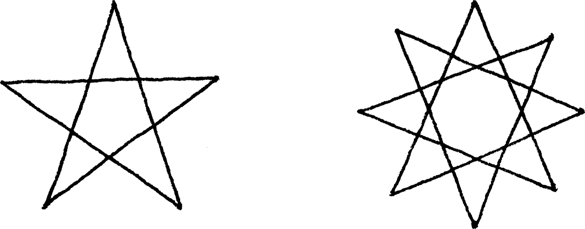
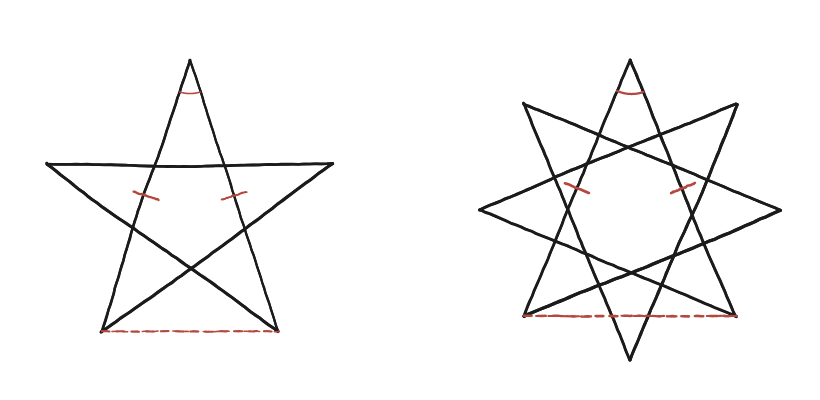

Es poden mesurar els angles d'una estrella regular de n puntes?

"Més puntes" no és l'única variable
Una estrella de cinc puntes es dibuixa unint cada vèrtex d'un pentàgon regular amb el vèrtex següent-però-un, saltant-ne un cada vegada. La de vuit puntes del dibuix fa el mateix però saltant-ne dos cada vegada. Aquest "quants vèrtexs es salten" —no només el nombre de puntes— és el que determina l'angle de cada punta: dues estrelles amb el mateix nombre de puntes però un salt diferent tenen puntes de mides diferents.
Aïllar una sola punta
Totes les puntes de l'estrella són idèntiques per simetria, així que n'hi ha prou a analitzar-ne una. Cada punta és el vèrtex d'un triangle isòsceles: format per dos segments de l'estrella que hi conflueixen (les cames, iguals entre si) i, com a base, la corda que uneix els dos punts on aquests segments toquen la circumferència que passa per totes les puntes. L'angle que busquem és l'angle al vèrtex d'aquest triangle isòsceles.
La construcció auxiliar que fa visible el triangle
La corda que tanca el triangle isòsceles no és cap aresta de l'estrella —l'estrella només "salta" vèrtexs, mai en dibuixa el contorn del polígon original— és una construcció auxiliar que cal afegir per fer visible el triangle que conté l'angle de la punta. Un cop marcada, el mateix argument val per a totes les altres puntes sense haver de repetir el dibuix.

Comptar arcs de circumferència
Els n vèrtexs de l'estrella divideixen la circumferència que hi passa en n arcs iguals. Si l'estrella "salta" k−1 vèrtexs cada vegada (és a dir, uneix cada vèrtex amb el k-èsim següent), l'angle a la punta correspon a l'arc de circumferència que queda fora del triangle isòsceles —els arcs que els dos costats de la punta no cobreixen. Comptant quants d'aquests n arcs iguals hi ha entre els dos costats de cada punta, arribem a la fórmula: angle = 180° × (n − 2k) / n.
L'angle a la punta d'una estrella {n/k} (n puntes, saltant k−1 vèrtexs cada vegada) és 180°×(n−2k)/n. Surt d'aïllar el triangle isòsceles amagat a cada punta i comptar quants dels n arcs iguals de la circumferència circumscrita queden fora d'aquest triangle.
Comprovació
Pentagrama (n=5, k=2): 180×(5−4)/5 = 36°. Estrella de vuit puntes com la del dibuix (n=8, k=3): 180×(8−6)/8 = 45°. La suma dels angles de totes les puntes no és cap coincidència: val n×180°×(n−2k)/n = 180°×(n−2k), o sigui 180° al pentagrama (5×36°) i 360° a l'estrella de vuit puntes (8×45°). Compte a no confondre aquesta suma amb el nombre de voltes que fa el traç abans de tancar-se, que és una altra cosa: aquest nombre és exactament k —dues voltes al pentagrama {5/2} i tres a l'estrella {8/3}—, i es calcula sumant els girs cap enfora, no els angles de les puntes (v. q07).